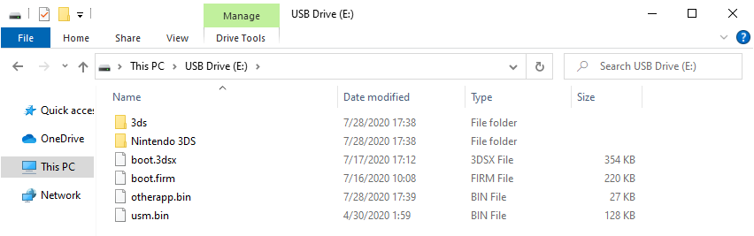

3DS PicHaxx+slotTool guide
This guide will bring a console from stock to boot9strap using PicHaxx to gain Homebrew Launcher access, and then using slotTool to inject an exploited WiFi profile. Once the exploited WiFi profile has been injected, you will use Safe Mode (a recovery feature present on all 3DS consoles) to activate it.
Before you start
You should only be following this page if:
- Your DSiWare Management menu is inaccessible after improperly uninstalling CFW (it crashes almost immediately when you try to open it)
- Your left and right shoulder buttons work
- You have your
movable.sedfile, or can easily obtain it
What you need
- The free eShop game "Pokémon Picross"
- Your
movable.sedfile from completing Seedminer - The otherapp payload corresponding to your device type, region, and version
- If your current version is 11.14.0-46, select 11.13.0-45 in the dropdown menu
- The latest release of Luma3DS
- The latest release of unSAFE_MODE
Section I - Prep Work
- Copy
boot.firmandboot.3dsxfrom the Luma3DS.zip(Luma3DSv10.2.1.zip) to the root of your SD card- The root of the SD card refers to the initial directory on your SD card where you can see the
Nintendo 3DSfolder, but are not inside of it
- The root of the SD card refers to the initial directory on your SD card where you can see the
- Copy the otherapp payload to the root of your SD card and rename it to
otherapp.bin- If you do not see the
.binextension, do not add it to the end of the filename
- If you do not see the
- Create a folder named
3dson the root of your SD card if it does not already exist - Copy the
slotToolfolder from the unSAFE_MODE.zip(RELEASE_v1.1.zip) to the3dsfolder - Copy
usm.binfrom the unSAFE_MODE.zipto the root of your SD card

Section II - PicHaxx
- Open the PicHaxx Save Tool website on your computer/mobile device
- Select your
movable.sedfile - Select "Build and Download"
- Wait for the process to complete
- You should receive a file named
00000001.sav
- You should receive a file named
- Navigate to
Nintendo 3DS-><ID0>-><ID1>->title->00040000->0017c100->dataon your SD card- This
<ID0>will be the same one that you used in Seedminer - This
<ID1>folder will be another 32 letter/number folder inside the<ID0>folder
- This
- Copy the downloaded
00000001.savfile to thedatafolder on your SD card- Overwrite the old save file when prompted
- Reinsert your SD card into your device
Section III - slotTool
- Power on your device
- Launch "Pokémon Picross"
- After a few seconds, you should see the Homebrew Launcher
- If you get a yellow screen, force power off the console, then try again
- If you get any other colour of screen, the game launches normally, or the game crashes, ensure that your otherapp payload is correct and that you have copied all files (
boot.3dsx,00000001.sav) to the correct locations
- Launch slotTool v1.4 from the list of homebrew
- If you get stuck on a red screen, forcefully power off the console by holding the power button for fifteen seconds, then retry this section
- Select the "INSTALL exploit to wifi slots 1,2,3 & shutdown" option
- You will see some on-screen text and then your system will shutdown
- If the on-screen text says FAIL, verify that the
/3ds/slotTool/directory has bothslotTool.3dsxandslotTool.xml

Section IV - unSAFE_MODE
- With your system still powered off, hold the following buttons: (Left Shoulder) + (Right Shoulder) + (D-Pad Up) + (A), then press (Power)
- Keep holding the buttons until your console boots into Safe Mode
- Press "OK" to accept the update
- There is no update. This is part of the exploit
- Press "I accept" to accept the terms and conditions
- The update will eventually fail, with error code
003-1099. This is intended behaviour- If the update does not fail, verify that all three of your internet connection settings have been replaced with Haxxxxxxxxxx, then try again

- If the update does not fail, verify that all three of your internet connection settings have been replaced with Haxxxxxxxxxx, then try again
- When asked "Would you like to configure Internet settings?", select "Yes"
- On the following menu, navigate to
Connection 1->Change Settings->Next Page (right arrow)->Proxy Settings->Detailed Setup(visual aid) - Once you see
B9S install SUCCESSon the top screen, press any button to reboot to Luma Configuration- If you are stuck on the
B9S install SUCCESSscreen, it is safe to forcefully turn off the console by holding the power button for 15 seconds - If you do not see the
B9S install SUCCESSscreen, ensure thatusm.binis on the root of the SD card, then try again
- If you are stuck on the
{kind=link}
Section V - Configuring Luma3DS
- Your device should automatically show the Luma Configuration menu
- If you do not see the Luma Configuration menu, turn off the console and hold SELECT while turning on the console to access it
- If the power light turns on and off, ensure that
boot.firmis on the root of the SD card
- Use the (A) button and the D-Pad to turn on the following:
- "Show NAND or user string in System Settings"
(x)indicates that the option has been turned on
- Press (Start) to save and reboot
- Your device should load the Home Menu after a short delay
Section VI - Restoring WiFi Configuration Profiles
- Launch the Download Play application
- Wait until you see the two buttons
- Do not select either of the options
- Press (Left Shoulder) + (D-Pad Down) + (Select) at the same time to open the Rosalina menu
- Select "Miscellaneous options"
- Select "Switch the hb. title to the current app."
- Press (B) to continue
- Press (B) to return to the Rosalina main menu
- Press (B) to exit the Rosalina menu
- Press (Home), then close Download Play
- Launch the Download Play application
- Your device should load the Homebrew Launcher
- Launch slotTool from the list of homebrew
- Select "RESTORE original wifi slots 1,2,3"
- Your device will reboot

Continue to Finalizing Setup
Credits
- ItsPizzaTime1501 for writing the slotTool portion of this guide
- 3ds.hacks.guide for the original PicHaxx guide
- zoogie for creating unSAFE_MODE/slotTool
- RandalHoffman (MechanicalDragon) for the alternate PicHaxx Injector website